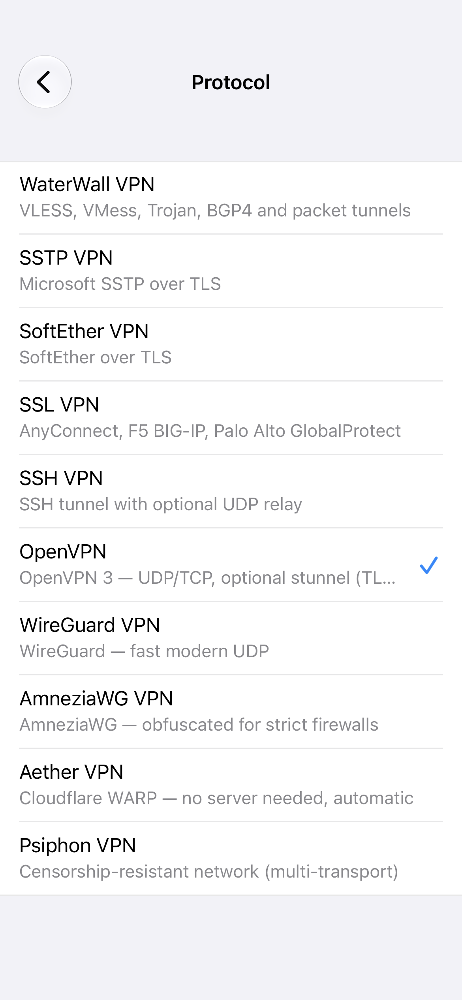
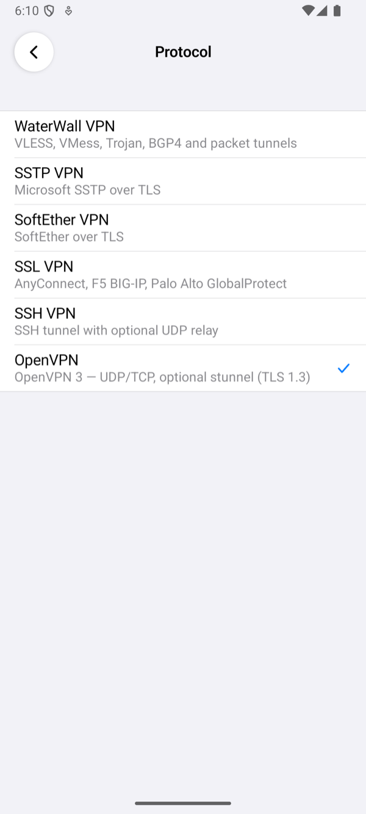
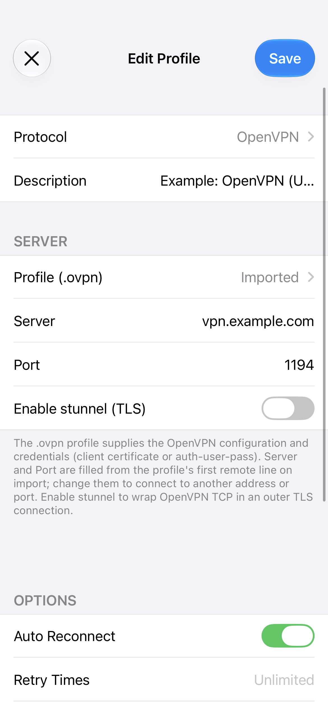
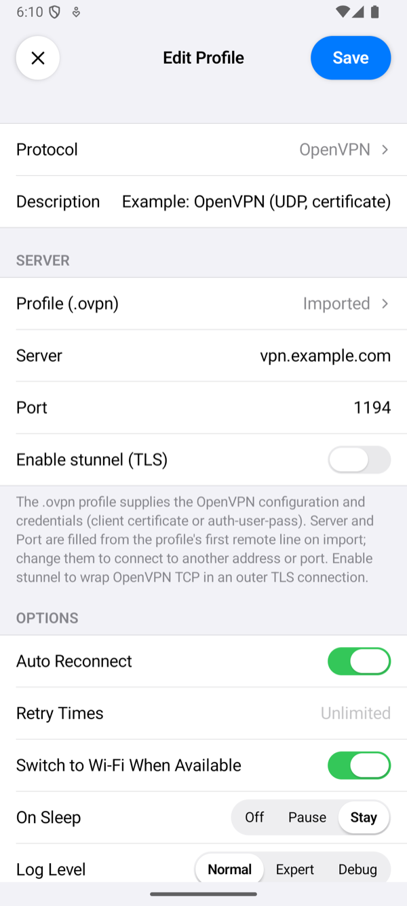
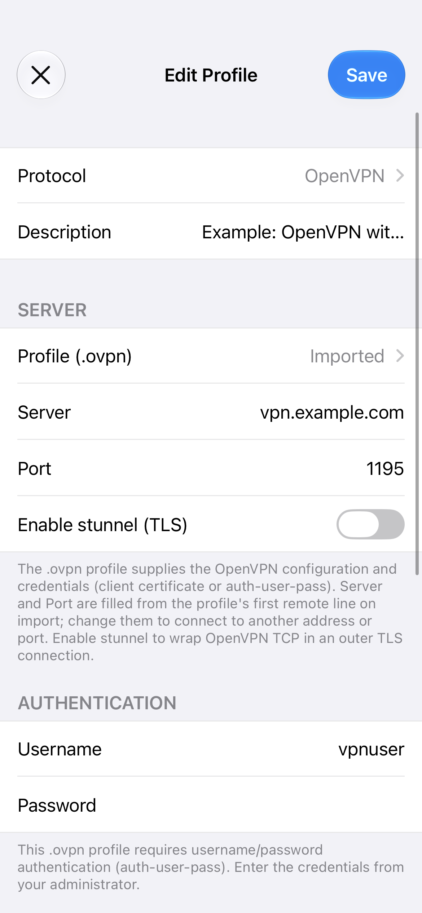
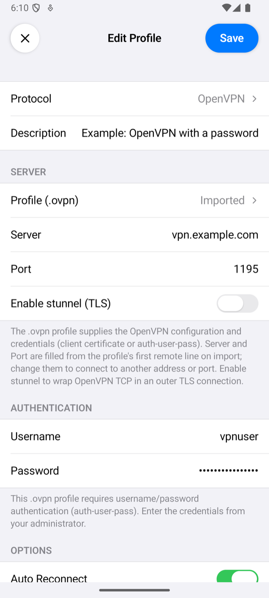

OpenVPN server
This page sets up OpenVPN 2.6, the version Ubuntu 24.04 ships, for the app: a certificate authority with easy-rsa, a UDP server, client profiles the app imports, an optional login with a username and password, and an optional stunnel listener on port 443 that carries OpenVPN inside TLS. Its last part sets up the profile in the app, on iPhone and on Android.
We ran these steps on our test server, Ubuntu 24.04 with OpenVPN 2.6.19, easy-rsa 3.1.7, stunnel 5.72 and certbot 2.9.0, 4 vCPUs and 6 GB of memory, on 8 November 2026, as the page shows them, with our server's name in place of vpn.example.com; then both phones connected with the page's own profiles: phone1 over UDP and through stunnel, vpnuser over UDP, TCP and stunnel, and phone2, revoked as part 9 says, was refused (the ovpn-guide-… cases in Test results). Three steps ran differently: certbot used --webroot, as a web server holds port 80 on our server, and kept the certificate it had issued earlier that day with the same command (a renewal dry run, certbot renew --dry-run, succeeded); the password went to openssl passwd -6 -stdin instead of its prompt; and part 9 revoked phone2, a certificate made for it with part 5's commands, so that phone1 stayed valid. The phones' other results named on these pages come from the runs listed in Test results.
What you need
- An Ubuntu 24.04 server with a public IPv4 address, and root on it.
- For stunnel with a Let's Encrypt certificate, a DNS name that points to the server, for example
vpn.example.com, and port 80 reachable while the certificate is issued and renewed. - The ports the phones use open to them: UDP 1194 for the UDP server, TCP 1194 for the TCP server, TCP 443 for stunnel, and 1195 and 8443 for password logins. Each part below says which it needs.
1. Install
apt update
apt install -y openvpn easy-rsaThis installs OpenVPN 2.6 and easy-rsa 3.1. stunnel and certbot come in part 7, only if you want stunnel.
2. Certificates
OpenVPN checks both ends with certificates of its own certificate authority (CA). easy-rsa makes them:
make-cadir /etc/openvpn/easy-rsa
cd /etc/openvpn/easy-rsa
export EASYRSA_BATCH=1 EASYRSA_CRL_DAYS=3650
./easyrsa init-pki
./easyrsa --req-cn="OpenVPN CA" build-ca nopass
./easyrsa build-server-full server nopass
./easyrsa gen-crl
cp pki/crl.pem /etc/openvpn/server/crl.pem
chmod 644 /etc/openvpn/server/crl.pem
openvpn --genkey secret /etc/openvpn/server/tc.keynopassleaves the keys without a passphrase. The server's key must start without one, and the app cannot type a passphrase for a client's key (part 5 makes the client's without one too).gen-crlmakes the list of revoked certificates, which the server reads at every connection (part 9). easy-rsa makes it valid for 180 days unlessEASYRSA_CRL_DAYSsays otherwise; once it runs out, the server refuses every client. 3650 days is ten years.- The certificates easy-rsa makes for the server and the phones are valid for 825 days, a little over two years; the CA's for ten years.
tc.keyis the tls-crypt key. It encrypts and signs OpenVPN's control channel with a key the server and its clients share: a server without it in a packet stays silent, so the server does not answer port scans and the TLS handshake is hidden.
3. The UDP server
port 1194
proto udp
dev tun
topology subnet
server 10.8.0.0 255.255.255.0
ca /etc/openvpn/easy-rsa/pki/ca.crt
cert /etc/openvpn/easy-rsa/pki/issued/server.crt
key /etc/openvpn/easy-rsa/pki/private/server.key
dh none
tls-crypt /etc/openvpn/server/tc.key
tls-version-min 1.2
data-ciphers AES-256-GCM:AES-128-GCM:CHACHA20-POLY1305
keepalive 10 60
push "redirect-gateway def1 bypass-dhcp"
push "dhcp-option DNS 1.1.1.1"
push "dhcp-option DNS 8.8.8.8"
user nobody
group nogroup
persist-key
persist-tun
verb 3
crl-verify /etc/openvpn/server/crl.pem
remote-cert-tls client
explicit-exit-notify 1server 10.8.0.0 255.255.255.0gives the phones addresses in 10.8.0.0/24;topology subnetgives each one address and the network's netmask.redirect-gatewaysends all of the phone's traffic through the VPN, and the twodhcp-option DNSlines are the name servers it uses meanwhile.keepalive 10 60: both ends send a ping every 10 seconds when nothing else goes, and the phone treats the server as gone after 60 seconds of silence, then connects again (Auto Reconnect).explicit-exit-notify 1tells the phones when the server stops or restarts, so they connect again at once instead of after 60 seconds.data-cipherslists the ciphers for the traffic; the app has all three. Configuration Reference explains what else the app takes.
The server may forward the phones' traffic, and replace their addresses with its own on the way out. ens160 is the name of our server's network interface; ip route show default prints yours after dev.
echo 'net.ipv4.ip_forward = 1' > /etc/sysctl.d/60-openvpn.conf
sysctl -p /etc/sysctl.d/60-openvpn.conf
iptables -t nat -A POSTROUTING -s 10.8.0.0/16 -o ens160 -j MASQUERADE
iptables -A FORWARD -i tun+ -j ACCEPT
iptables -A FORWARD -o tun+ -m conntrack --ctstate RELATED,ESTABLISHED -j ACCEPT
apt install -y iptables-persistent
netfilter-persistent saveiptables-persistent loads the rules again at boot; when it asks whether to save the current rules, either answer is fine, as netfilter-persistent save saves them afterwards. Start the server:
systemctl enable --now openvpn-server@udp
systemctl status openvpn-server@udpThe status ends with Initialization Sequence Completed. The name after @ is the configuration's file name without .conf.
4. A TCP server (optional; stunnel needs it)
Some networks pass only TCP. A second server on TCP port 1194 takes those phones, and stunnel (part 7) hands its connections to it. Its configuration is the UDP one with three lines changed: proto tcp, its own network, and no explicit-exit-notify, which is for UDP only:
sed -e 's/^proto udp$/proto tcp/' -e 's/^server 10\.8\.0\.0 /server 10.8.1.0 /' -e '/^explicit-exit-notify/d' \
/etc/openvpn/server/udp.conf > /etc/openvpn/server/tcp.conf
systemctl enable --now openvpn-server@tcp5. A profile for each phone
Each phone gets its own certificate: OpenVPN lets one certificate be connected once, so when a second phone connects with the same certificate, the server drops the first one's session. Make the certificate:
cd /etc/openvpn/easy-rsa
EASYRSA_BATCH=1 ./easyrsa build-client-full phone1 nopassThe app takes everything in one file, the .ovpn profile, with the certificates and keys inside it. This script writes one; save it as /etc/openvpn/client/make-profile.sh and put your server's name in host=:
#!/bin/bash
# make-profile.sh NAME KIND: writes /etc/openvpn/client/NAME-KIND.ovpn with everything inline.
# KIND: udp, tcp or stunnel (certificate login: NAME is the client certificate's name), udp-pass, tcp-pass or
# stunnel-pass (username and password: no client certificate).
set -euo pipefail
name=$1; kind=$2; host=vpn.example.com; pki=/etc/openvpn/easy-rsa/pki
case $kind in
udp) proto=udp; port=1194 ;; tcp) proto=tcp; port=1194 ;; stunnel) proto=tcp; port=443 ;;
udp-pass) proto=udp; port=1195 ;; tcp-pass) proto=tcp; port=1195 ;; stunnel-pass) proto=tcp; port=8443 ;;
*) echo "unknown kind $kind" >&2; exit 1 ;;
esac
out=/etc/openvpn/client/$name-$kind.ovpn
umask 077
{
printf 'client\ndev tun\nproto %s\nremote %s %s\nnobind\npersist-key\npersist-tun\nremote-cert-tls server\nverb 3\n' "$proto" "$host" "$port"
case $kind in *-pass) echo auth-user-pass ;; esac
echo "<ca>"; cat $pki/ca.crt; echo "</ca>"
case $kind in
*-pass) ;;
*) echo "<cert>"; openssl x509 -in "$pki/issued/$name.crt"; echo "</cert>"
echo "<key>"; cat "$pki/private/$name.key"; echo "</key>" ;;
esac
echo "<tls-crypt>"; cat /etc/openvpn/server/tc.key; echo "</tls-crypt>"
} > "$out"
echo "$out"chmod 755 /etc/openvpn/client/make-profile.sh
/etc/openvpn/client/make-profile.sh phone1 udpIt prints the file's name, here /etc/openvpn/client/phone1-udp.ovpn. The file holds the phone's private key: whoever has it can connect as that phone. Copy it to the phone and import it in the app (From Files), then delete the copies you do not need. To import it From URL instead, serve it only over HTTPS at an address nobody can guess, and only until the phone has it.
6. Login with a username and password (optional)
Instead of a certificate per phone, the server can check a username and password. These users have no account on the server: a script checks their password against a file that holds only hashes of the passwords. The script:
#!/bin/sh
# auth-user-pass-verify via-file: line 1 of $1 is the username, line 2 the password; users holds "name:SHA-512 crypt"
user=$(sed -n 1p "$1"); pass=$(sed -n 2p "$1")
hash=$(awk -F: -v u="$user" '$1 == u { sub(/^[^:]*:/, ""); print; exit }' /etc/openvpn/server/users)
[ -n "$hash" ] || exit 1
salt=$(printf '%s' "$hash" | cut -d'$' -f3)
[ "$(printf '%s\n' "$pass" | openssl passwd -6 -salt "$salt" -stdin)" = "$hash" ]chmod 755 /etc/openvpn/server/check-password.sh
touch /etc/openvpn/server/users
chown root:nogroup /etc/openvpn/server/users
chmod 640 /etc/openvpn/server/users
printf '%s:%s\n' vpnuser "$(openssl passwd -6)" >> /etc/openvpn/server/usersopenssl passwd -6 asks for the password twice and prints its hash; repeat the last line for each user. The server for these logins runs on port 1195 beside the one for certificates; its configuration is the UDP one with its own port and network, and the login lines in place of the certificate check:
sed -e 's/^port 1194$/port 1195/' -e 's/^server 10\.8\.0\.0 /server 10.8.2.0 /' \
-e '/^crl-verify/d' -e '/^remote-cert-tls/d' /etc/openvpn/server/udp.conf > /etc/openvpn/server/udp-pass.conf
cat >> /etc/openvpn/server/udp-pass.conf <<'EOF'
verify-client-cert none
username-as-common-name
script-security 2
auth-user-pass-verify /etc/openvpn/server/check-password.sh via-file
EOF
systemctl enable --now openvpn-server@udp-pass
/etc/openvpn/client/make-profile.sh vpnuser udp-passThe profile has no certificate of its own and the line auth-user-pass, so the app asks for Username and Password. A password may hold any character, spaces and letters of any script included. For password logins over TCP, and through stunnel (part 7), a TCP twin on port 1195:
sed -e 's/^proto udp$/proto tcp/' -e 's/^server 10\.8\.2\.0 /server 10.8.3.0 /' -e '/^explicit-exit-notify/d' \
/etc/openvpn/server/udp-pass.conf > /etc/openvpn/server/tcp-pass.conf
systemctl enable --now openvpn-server@tcp-pass
/etc/openvpn/client/make-profile.sh vpnuser tcp-pass7. stunnel on port 443 (optional)
stunnel wraps OpenVPN's TCP connection in ordinary TLS on port 443, where it looks like a web connection; the app's Enable stunnel (TLS) switch does the other end. It needs the TCP server of part 4 and a certificate for the server's name. Let's Encrypt gives one without an email address:
apt install -y stunnel4 certbot
certbot certonly --standalone -d vpn.example.com --register-unsafely-without-email --agree-tos --non-interactive \
--deploy-hook "systemctl restart stunnel@openvpn"--standalone answers Let's Encrypt's check on port 80 itself. If a web server already uses port 80, give certbot its folder instead: certonly --webroot -w /var/www/html in place of certonly --standalone, which is how our server got its certificate. certbot renews the certificate by itself before it runs out, and --deploy-hook restarts stunnel after each renewal so it takes the new one. stunnel's configuration:
foreground = yes
pid =
setuid = stunnel4
setgid = stunnel4
[openvpn]
accept = 443
connect = 127.0.0.1:1194
cert = /etc/letsencrypt/live/vpn.example.com/fullchain.pem
key = /etc/letsencrypt/live/vpn.example.com/privkey.pem
sslVersionMin = TLSv1.2systemctl enable --now stunnel@openvpn
ss -tlnp | grep ':443 '
/etc/openvpn/client/make-profile.sh phone1 stunnelss shows stunnel4 on port 443. In the app, import phone1-stunnel.ovpn and turn Enable stunnel (TLS) on; stunnel Host, Port and SNI may stay empty: the app then uses Server, 443 and the server's name. A certificate of your own CA works as well: import that CA in the profile's CA Certificate, and the app accepts only certificates it signed.
Password logins go through stunnel to the TCP twin of part 6, on a port of their own. A second service in the same file:
cat >> /etc/stunnel/openvpn.conf <<'EOF'
[openvpn-pass]
accept = 8443
connect = 127.0.0.1:1195
cert = /etc/letsencrypt/live/vpn.example.com/fullchain.pem
key = /etc/letsencrypt/live/vpn.example.com/privkey.pem
sslVersionMin = TLSv1.2
EOF
systemctl restart stunnel@openvpn
/etc/openvpn/client/make-profile.sh vpnuser stunnel-passIn the app, that profile needs stunnel Port 8443.
8. Firewall
Open the ports of the parts you set up: UDP 1194 for the UDP server, UDP and TCP 1195 for password logins, TCP 1194 for the TCP server, TCP 443 and 8443 for stunnel, and TCP 80 for Let's Encrypt. If ufw is active: ufw allow 1194/udp, and so on for each. Our server has no firewall of its own.
9. Revoking a phone's certificate
The example takes the access of phone2, a second phone made as in part 5:
cd /etc/openvpn/easy-rsa
EASYRSA_BATCH=1 ./easyrsa revoke phone2
EASYRSA_BATCH=1 EASYRSA_CRL_DAYS=3650 ./easyrsa gen-crl
cp pki/crl.pem /etc/openvpn/server/crl.pemThe server reads the list at the next connection; no restart is needed. A phone that was connected stays until it reconnects. The server refuses the revoked certificate during the TLS handshake and says why only in its own log, journalctl -u openvpn-server@udp: the app waits for an answer and then reports that the server stopped answering after the TLS handshake. For a password login, delete the user's line from /etc/openvpn/server/users.
10. Check
systemctl status openvpn-server@udp
journalctl -u openvpn-server@udp -fWhen a phone connects, the log shows Peer Connection Initiated with the certificate's name (or the username), then the address it got and Data Channel: cipher 'AES-256-GCM'. The status file /run/openvpn-server/status-udp.log lists the connected phones.
11. Set up the app on the phone
Install SRP VPN Connect first: on iPhone or on Android, each in its own way. An OpenVPN profile has the same fields on both, so the steps in the app are the same on iPhone and Android; only the permission at the first connection differs.
Create the profile
- Copy
/etc/openvpn/client/phone1-udp.ovpn, the profile from part 5, to the phone. Copy the file itself: through a chat app its certificate can be damaged on the way, and the app then refuses it. From Files below opens the phone's own file picker, the one of the Files app on iPhone and the system's on Android, so put the file where that picker finds it. - On the home screen, tap +, tap Protocol and choose OpenVPN.
- Description: optional, the profile's name on the home screen. When it is empty, the home screen shows the server's name or address.
- Tap Profile (.ovpn), choose From Files and pick
phone1-udp.ovpn. The row then says Imported. To use From URL instead, serve the file only over HTTPS, at an address nobody can guess, and only until the phone has it. Then delete the copies you do not need: the file holds the phone's private key. - Server and Port fill themselves in from the profile's
remoteline: the name you put inhost=in part 5, and1194. Leave them as they are. - Leave Enable stunnel (TLS) off. A profile with only a certificate needs no Username or Password.
- Leave everything under OPTIONS as it is, and tap Save.
Each optional part makes its own profile. Copy and import that file instead of phone1-udp.ovpn, and change only this:
- A password login (part 6):
vpnuser-udp-pass.ovpn, orvpnuser-tcp-pass.ovpnover TCP; Port fills in as1195. The profile has the lineauth-user-pass, so Username and Password appear: entervpnuserand the password you gaveopenssl passwd -6. - stunnel (part 7):
phone1-stunnel.ovpn. Turn Enable stunnel (TLS) on and leave stunnel Host, stunnel Port and stunnel SNI empty: the app then uses Server, 443 and the server's name. Leave CA Certificate on System Trust, which accepts the Let's Encrypt certificate; with a certificate of your own CA, import that CA there. - A password login through stunnel (part 7):
vpnuser-stunnel-pass.ovpn, with stunnel on as above, stunnel Port8443, andvpnuserand its password as for part 6.






Connect
- On the home screen, tap the profile to select it, then tap the power button.
- The first time, the system asks for permission: iOS asks whether the app may add a VPN configuration, and Android shows a Connection request. Allow it.
- The status changes to Connected once the server has accepted the phone and sent its settings, and the row of the profile shows the time of one request through the tunnel.
journalctl -u openvpn-server@udp -f from part 10 shows Peer Connection Initiated with phone1, then the address the phone got and Data Channel: cipher 'AES-256-GCM'. For the other profiles, put the configuration they reach after the @: tcp behind stunnel, udp-pass or tcp-pass for password logins, which show vpnuser. If the app shows Connection Failed instead, Troubleshooting explains its reason; tap the status under the power button to open the log.
Setting up the app describes every field.